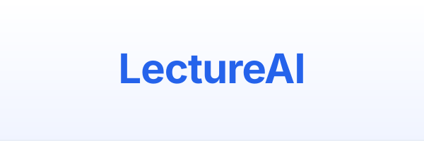
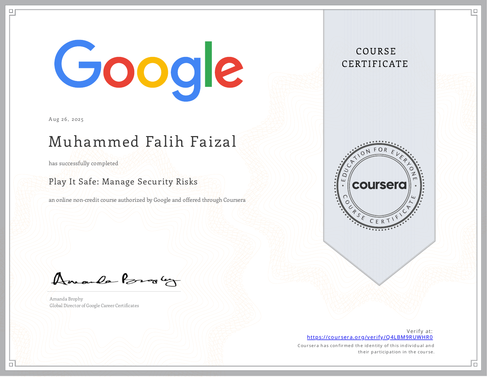
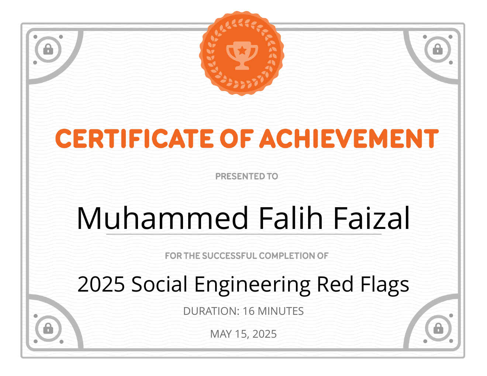
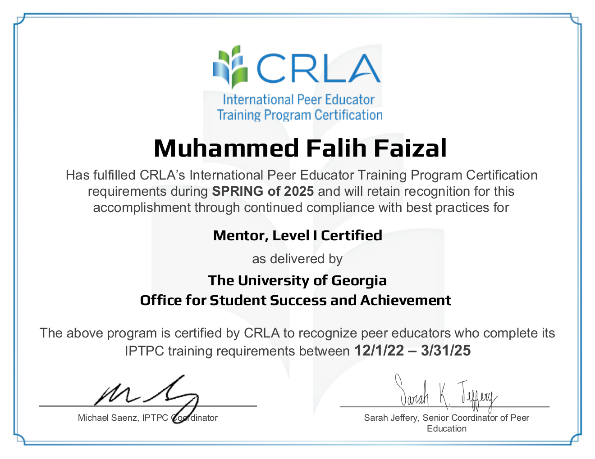
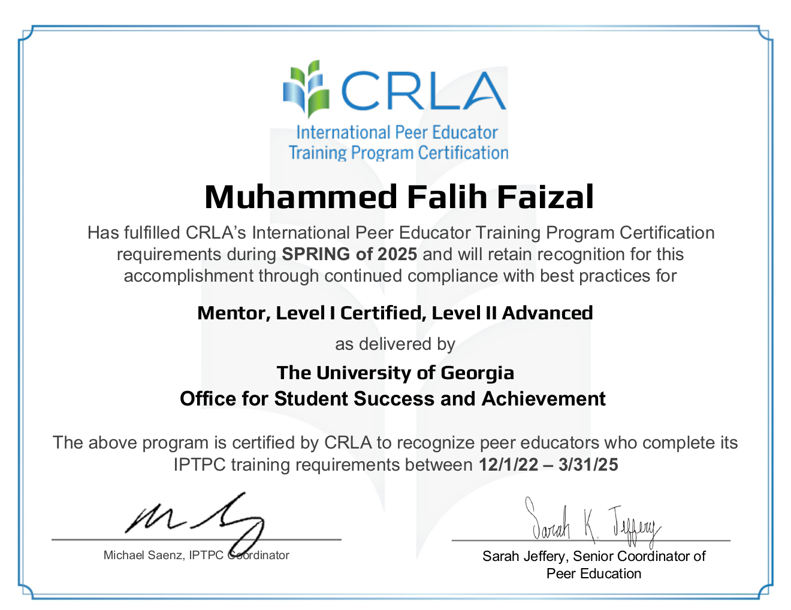
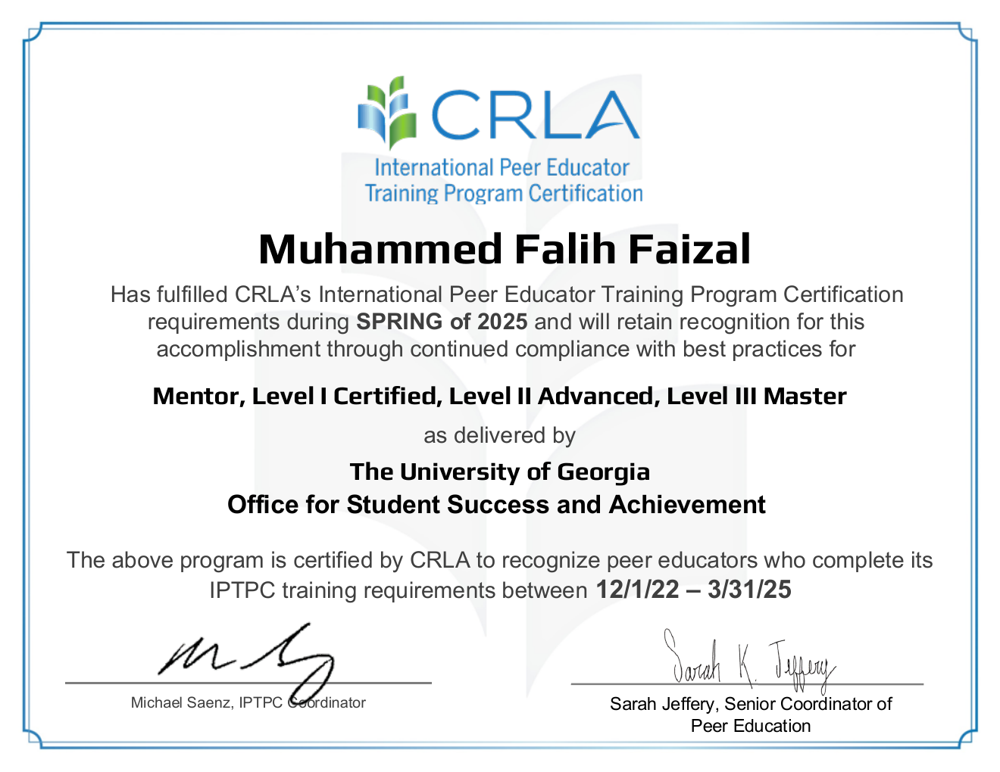

Education
University of Georgia
Athens, GABachelor of Science in Computer Science | Certification in Artificial Intelligence
Expected Graduation: December 2026
Relevant Coursework: Data Structures, Algorithms, Computing Architecture, Systems Programming, Object Oriented Programming, Software Development II, Database Management, Web Programming, Artificial Intelligence, Discrete Mathematics, Linear Algebra, Computing Ethics, Data Science I, Calculus II
Professional Experience
Textron
Leader Development Program (LDP) IT Intern
- Part of the IT team supporting enterprise technology operations, contributing to process improvement and cross-functional technology initiatives across business units
UGA Agricultural Robotics Lab
Undergraduate Research Assistant
- Developed and evaluated autonomous navigation functionality for a poultry-farm rover, focusing on sensor-driven movement logic and on-device computation to support controlled indoor testing environments
- Implemented and tested autonomous navigation algorithms on Raspberry Pi using Python, integrating motor-control scripts with ultrasonic sensor feedback to detect obstacles, tune turning behavior, and reduce navigation errors by ~30% across 20+ indoor trial runs
Trinity Health
Information Systems Intern
- Utilized Darik's Boot and Nuke and disk cloning software to securely wipe, reimage, and deploy 150+ computers and devices, ensuring standardized configurations and efficient rollouts across departments
- Audited IT assets and troubleshot hardware/software issues at user endpoints, improving inventory accuracy and reducing downtime for 200+ staff members, streamlining IT support operations and enhancing overall service reliability
- Supported configuration and maintenance of 30+ network devices (access points, switches), strengthening building-wide connectivity and reducing network-related service tickets by 25%
FreeWorld Empire
UI/UX Intern
- Developed and customized responsive web interfaces using React and Node.js, applying user-centered design principles and WCAG accessibility standards, improving cross-platform usability and performance
- Conducted layout audits and implemented UX heuristics that reduced user drop-off rates by 20% on key pages; optimized site architecture and navigation through iterative design cycles, A/B testing, and performance analytics review
SolutionZ Inc.
Information Technology Intern
- Collaborated with 4 interns to allocate $50,000+ in grants to 20+ Georgia schools, expanding technology access; optimized network security and AV systems in 15+ conference rooms to boost data protection and collaboration
- Gained hands-on experience in network troubleshooting, software deployment, and AV technology integration within corporate environments, improving operational efficiency and supporting seamless day-to-day business functions
Personal Projects
SeatScout
2025 – Present- Built a full-stack ticket price comparison platform aggregating listings from major resale markets, helping users find the cheapest seats for sports and entertainment events in real time
- Engineered a Next.js + TypeScript frontend with a dark, responsive UI and integrated backend adapters for multiple ticketing APIs including SeatGeek, delivering fast search and filter experiences
- Deployed on Vercel with authentication via Clerk, enabling personalized watchlists, saved searches, and user-specific event tracking across devices
LectureAI
July 2025 – Present
- Built LectureAI, a Next.js 14 + TypeScript app converting lecture recordings and YouTube videos into AI study notes, summaries, and key term definitions. Achieved 95%+ transcription accuracy and cut manual note-taking effort by 60%+
- Engineered a Supabase-powered dashboard with AI-generated quizzes and progress tracking, delivering a mobile-first, responsive UI (Tailwind CSS + React). Processes 60-minute lectures in under 10 minutes
- Deployed on Vercel with auto-updates from GitHub; scaled to handle 500+ lecture uploads with <5% error rate
Vibra
August 2024 – Present
- Built a JavaFX desktop application integrating the Apple Music/iTunes API to search and display multimedia (songs, albums, artists, movies), with interactive gallery layouts and randomized content refresh
- Designed a modular OOP architecture in Java with inheritance, polymorphism, and interfaces; added robust error handling, async API requests, and caching to deliver 95%+ query accuracy
- Improved reliability with 50+ JUnit tests, Maven dependency management, and Git version control; packaged via Maven Shade/JavaFX plugin for cross-platform distribution
BookNook
May 2024 – Present- Built a cross-platform JavaFX desktop app integrating dictionary and book APIs to deliver 10,000+ word definitions, phonetics audio, synonyms/antonyms, and book metadata with cover images
- Enhanced usability with offline mode, flashcards, favorites/history, and data export, while optimizing API requests with caching and async pipelines to cut latency by 40%
Technical Skills
Tool Highlights
Click a tool to see how I use it in real projects.
Next.js
I use Next.js 14 with TypeScript to build full-stack, production-ready applications like LectureAI and SeatScout, combining server-side rendering, API routes, and modern React patterns.
- Built LectureAI's front-end and back-end with file upload, auth, and dashboard flows.
- Optimized performance with dynamic routing, caching, and incremental static regeneration.
React
React is my primary front-end library for building modular, reusable UI components with strong state management and accessibility in mind.
- Designed responsive, accessible interfaces for web apps and dashboards.
- Applied UI/UX best practices from my internship experience to reduce user friction.
JavaFX
I use JavaFX to build cross-platform desktop applications with rich, interactive interfaces.
- Implemented interactive galleries, search views, and split layouts in Vibra and BookNook.
- Packaged apps using Maven and jpackage for smooth installation on different platforms.
Supabase
Supabase powers authentication, storage, and database features in my full-stack projects.
- Built LectureAI dashboards with user-specific progress, quiz history, and lecture metadata.
- Used row-level security and SQL policies to keep user data safe and scoped correctly.
Docker
I use Docker to containerize services for consistent environments across development and deployment.
- Defined multi-stage Dockerfiles to keep images lean and reproducible.
- Used containers to align local development with cloud deployment environments.
Vercel
Vercel is my go-to platform for deploying modern web apps with Git-based workflows.
- Deployed LectureAI and SeatScout with automatic previews and production deployments from GitHub.
- Monitored performance and improved Core Web Vitals for a smoother user experience.
Certifications
Foundations of Cybersecurity
Google / Coursera August 2025
Play It Safe: Manage Security Risks
Google / Coursera August 2025
Social Engineering Red Flags
Security Awareness Training May 2025
CRLA Peer Educator — Level I
University of Georgia / CRLA Spring 2025
CRLA Peer Educator — Level II Advanced
University of Georgia / CRLA Spring 2025